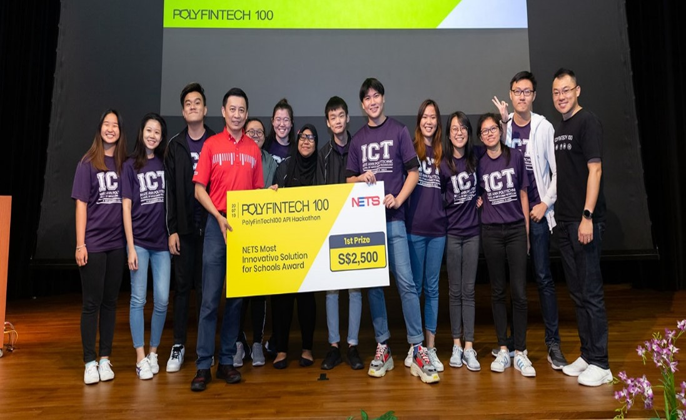
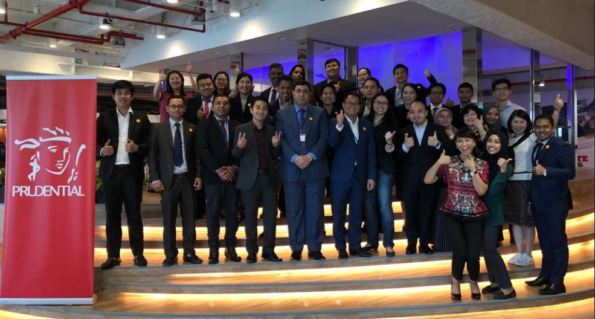
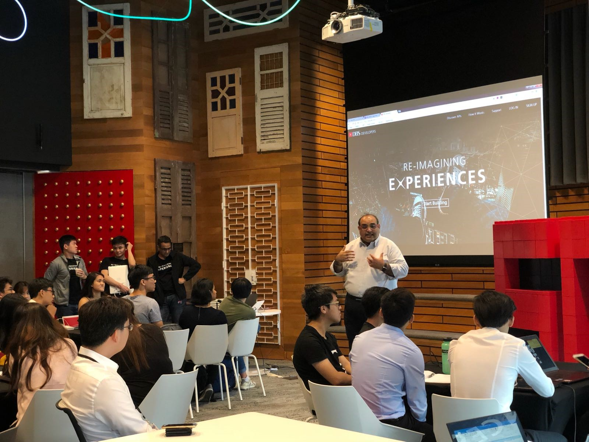
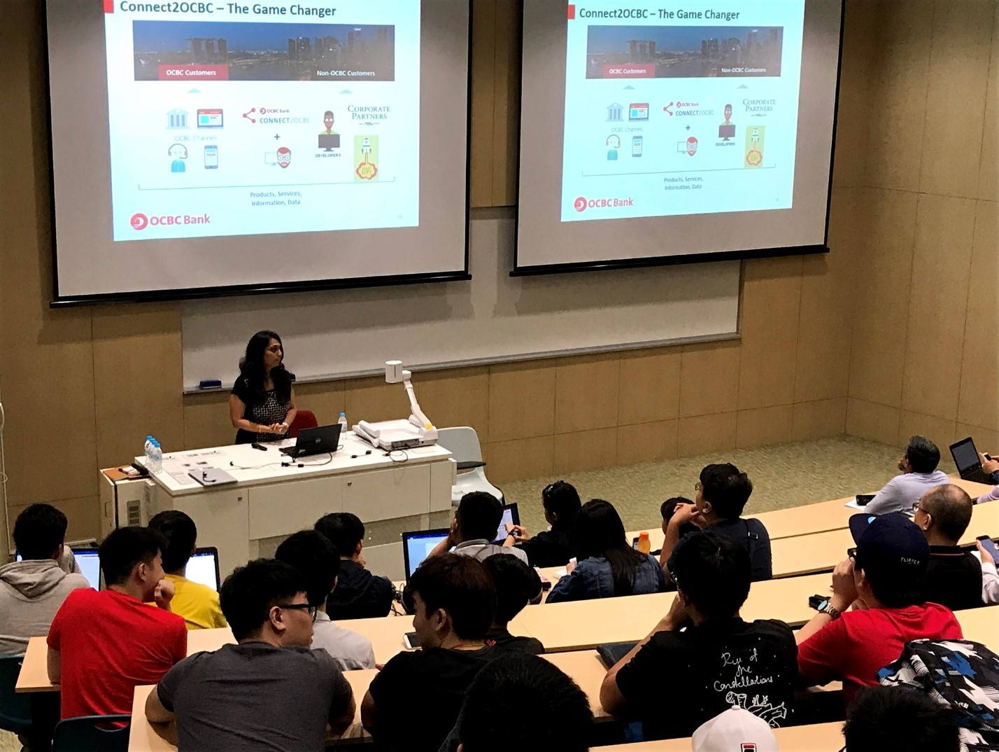
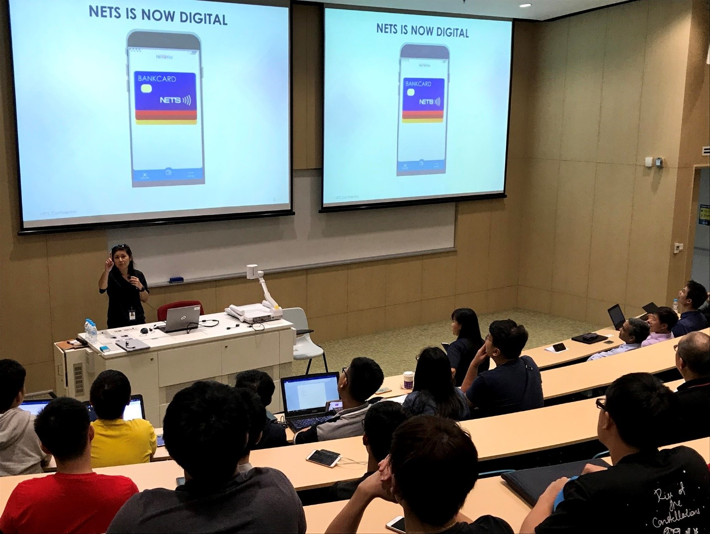

POLYFINTECH 100 TALK - RISK MANAGEMENT: THE MAS EXPERIENCE
On 25 July 2019, PolyFintech 100 was privileged to invite one of our distinguished industry mentors, Mr Bernard Wee, Assistant Managing Director (Finance, Risk & Currency Group) from the Monetary Authority of Singapore (MAS) to share his insights on Risk Management and career journey with 70 School of ICT students from Dip. Financial Informatics. It was a lively and candid sharing session which provided students with a good opportunity to soak in valuable knowledge and experience provided first-hand by a member of the senior management team at MAS.
_____________________________
ENG HUI SHAN
A true blue heartlander, Hui Shan loves exploring good eats in the neighbourhoods. She enjoys writing, visiting the library and hopes to pick up yoga seriously. Hui Shan is part of the innovation section at The Sandbox Office in Ngee Ann Polytechnic, where she creates projects to excite the school community to participate in the innovation and entrepreneurship culture.
POLYFINTECH 100-MAS API HACKATHON 2019 FINALE
On 20 July 2019, the PolyFinTech 100-MAS API Hackathon 2019 Finale was held at Temasek Polytechnic, with 169 students in 34 participating teams from the 5 polytechnics pitching and presenting their solutions to a panel of distinguished judges from industry. From among them, the top 6 teams will take centrestage again to showcase their solutions at Singapore Fintech Festival 2019 in November.
The winning teams are as follows:
Token Economy Association and Tribe Accelerator Best Use Case for Blockchain Award - Champion: Team Excalibur (SP)
Token Economy Association and Tribe Accelerator Best Use Case for Blockchain Award - 1st Runner-up: Team FoodINFO (NP)
OCBC Most Applicable Fintech and Artificial Intelligence Award - Champion: Team BOTS (NP)
OCBC Most Applicable Fintech and Artificial Intelligence Award - 1st Runner-up: Team Hamellus (SP)
NETS Most Innovative Solution for Schools Award - Champion: Team Level Up Budget (NP)

NETS Most Innovative Solution for Schools Award - 1st Runner-up: Team Jank (NYP)
Prudential Most Transformative InsureTech Award - Champion: Team Syndesi (TP)
Prudential Most Transformative InsureTech Award - 1st Runner-up: We Got You Covered (SP)
PayPal Most Sustainable Social Innovation Award - Champion: Team S.M.C (RP)
PayPal Most Sustainable Social Innovation Award - 1st Runner-up: Team BIT2 (TP)
_____________________________
ENG HUI SHAN
A true blue heartlander, Hui Shan loves exploring good eats in the neighbourhoods. She enjoys writing, visiting the library and hopes to pick up yoga seriously. Hui Shan is part of the innovation section at The Sandbox Office in Ngee Ann Polytechnic, where she creates projects to excite the school community to participate in the innovation and entrepreneurship culture.
INNOPOLY 2019 – FINTECH DAY
As part of this year’s inaugural Innopoly 2019 initiative to create greater awareness for Ngee Ann Polytechnic’s Innovation & entrepreneurship eco-system, the PolyFintech 100 team was pleased to host FinTech Day on 17 July 2019, which comprises of a series of talks by a panel of distinguished industry leaders from various sectors within FinTech. More than 200 students and staff from the various polytechnics attended the talks.
_____________________________
ENG HUI SHAN
A true blue heartlander, Hui Shan loves exploring good eats in the neighbourhoods. She enjoys writing, visiting the library and hopes to pick up yoga seriously. Hui Shan is part of the innovation section at The Sandbox Office in Ngee Ann Polytechnic, where she creates projects to excite the school community to participate in the innovation and entrepreneurship culture.
POLYFINTECH 100 PRESENTS: THE FINTECH SPEAKERS’ SERIES
On 26 June 2019, PolyFintech 100 invited a panel of distinguished industry mentors to share their insights and experience in FinTech, as well as career tips to 108 NP students and staff from various Schools.
The event kicked off with an opening presentation “The Future is Now”, by Ms Namrata Jolly, Former Regional Head of Digital Experience and Engagement at Citibank & Former Head of Customer & Digital at Prudential. This was followed by a sharing by Mr Choy Siew Kai, Former Managing Director, GIC Private Limited and Fellow at Stanford University Distinguished Careers Institute, on the topic “Will AI replace or augment Finance jobs in the future?”
The third session was helmed by Mr Shameek Kundu, Chief Data Officer, Standard Chartered Bank, who spoke on the topic “Data as the engine of growth for the economy – How are banks leveraging on data?” In the closing session, Dr Ernie Teo, Chief Technology Officer, JEDTrade, spoke on the topic “Is Blockchain a hype? What are the applications of Blockchain today?”
The PolyFintech 100 team looks forward to organising more events to connect our mentors and students further. Watch this space!
_____________________________
ENG HUI SHAN
A true blue heartlander, Hui Shan loves exploring good eats in the neighbourhoods. She enjoys writing, visiting the library and hopes to pick up yoga seriously. Hui Shan is part of the innovation section at The Sandbox Office in Ngee Ann Polytechnic, where she creates projects to excite the school community to participate in the innovation and entrepreneurship culture.
SHARING ON THE PRUFINTEGRATE EXPERIENCE – BY LAI YI YIN (NGEE ANN POLYTECHNIC, DIP. BFS YEAR 3)
Below is a sharing by the winner of the PRUFintegrate 2018 competition, Lai Yi Yin, currently a Year 3 student from Diploma in Banking and Financial Services, on her competition experience and learning journey with Prudential Singapore.
The PRUFintegrate competition was first introduced to me by my lecturer. With the problem statements that were given to me, I had decided on a problem statement that was the most relatable and closest to me. After deciding on the topic, I did a fair amount of research and completed my topic within the day and I submitted the proposal to my lecturer.
When I first heard the news that I had managed to clinch the gold prize, I was extremely shocked and ecstatic. This win gave me the opportunity to present at the Singapore FinTech Festival in Nov 2018. This presentation gave me a glimpse into the corporate world and its inner workings. The experience was incredibly fulfilling.
I was privileged to be invited to a luncheon with the CEO of Prudential Singapore, which was a memorable event. I was able to converse with the top management of Prudential Singapore, and learn more about their thought process, as well as their world views. This opportunity provided me with numerous fresh insights which helped to widen my horizons.
I also had the opportunity to go on an exciting trip with Prudential staff members to the Innov8rs conference in Shanghai from 25 to 28 Jun 2019. It was a wonderful and enriching trip, in which I had met a lot of like-minded people in the field of innovation, and also made new friends while being immersed in a new culture.
This experience taught me how to step out of my comfort zone, and pushed me to learn how to interact with people from various backgrounds, departments, nationalities and different walks of life. This trip had also equipped me with more knowledge, self-awareness and connections.
_____________________________
ENG HUI SHAN
A true blue heartlander, Hui Shan loves exploring good eats in the neighbourhoods. She enjoys writing, visiting the library and hopes to pick up yoga seriously. Hui Shan is part of the innovation section at The Sandbox Office in Ngee Ann Polytechnic, where she creates projects to excite the school community to participate in the innovation and entrepreneurship culture.
SCHOOL OF ICT INTERNSHIP NETWORKING EVENT 2019
On 23 May 2019, various corporate partners of PolyFintech 100 participated in NP School of ICT’s Internship Networking Fair. Prudential, Shopee, Circles.Life, Shopback and Prive Technologies were among the companies interviewing and assessing final-year ICT students at their booth showcases in a highly engaging speed-dating format.
_____________________________
ENG HUI SHAN
A true blue heartlander, Hui Shan loves exploring good eats in the neighbourhoods. She enjoys writing, visiting the library and hopes to pick up yoga seriously. Hui Shan is part of the innovation section at The Sandbox Office in Ngee Ann Polytechnic, where she creates projects to excite the school community to participate in the innovation and entrepreneurship culture.
FINTECH FOUNDATION PROGRAMME RUN 1 GRADUATION
On 18 April 2019, the inaugural run of the FinTech Foundation Programme has successfully concluded with the graduation of 17 participants coming from various fields and industries. In this 2.5-day short course, participants were provided with an overview of the latest themes and developments in FinTech, and hands-on training in the essentials of design thinking and blockchain which can be readily applied to their areas of work. Watch this video for exciting highlights from Run 1 of the programme!
_____________________________
ENG HUI SHAN
A true blue heartlander, Hui Shan loves exploring good eats in the neighbourhoods. She enjoys writing, visiting the library and hopes to pick up yoga seriously. Hui Shan is part of the innovation section at The Sandbox Office in Ngee Ann Polytechnic, where she creates projects to excite the school community to participate in the innovation and entrepreneurship culture.
POLYFINTECH100-MAS HACKATHON 2019 KICKOFF & BRIEFING
On 5 April 2019, the PolyFinTech-MAS Hackathon 2019 Kickoff event was held at Ngee Ann Polytechnic. A record number of 40 teams signed up for this year’s hackathon, with over 200 student participants across all five polytechnics. Gerald Nah from MAS, and Alfred Teng from Temasek Polytechnic were on hand to brief the students on the rules, timelines and deliverables of the competition. This was followed by an introduction to Design Thinking by LUMA Labs. Representatives from the sponsors OCBC, NETS, PayPal, Prudential, Token Economy Association and Tribe Accelerator also briefed the students on the provided problem statements in each category.
_____________________________
ENG HUI SHAN
A true blue heartlander, Hui Shan loves exploring good eats in the neighbourhoods. She enjoys writing, visiting the library and hopes to pick up yoga seriously. Hui Shan is part of the innovation section at The Sandbox Office in Ngee Ann Polytechnic, where she creates projects to excite the school community to participate in the innovation and entrepreneurship culture.
FINTECH FOUNDATION PROGRAMME LAUNCH & MOU SIGNING CEREMONY
On 27 Mar 2019, the National Trades Union Congress (NTUC), Banking and Financial Services Union (BFSU), Singapore FinTech Association (SFA) and Ngee Ann Polytechnic (NP) officially launched the FinTech Foundation Programme at the FinTech Talent Fair held at the M hotel, with Mr Patrick Tay, Assistant Secretary General of NTUC as the Guest-of-Honour. A MOU signing ceremony between NTUC, BFSU, SFA and NP was held to seal the co-operation across these organisations involved in the co-development of the course.
The FinTech Foundation Programme is a 2.5-day course that aims to help junior executives in the financial industry grasp key concepts of FinTech and gain a better understanding of how key technology trends affects the sector. The programme is also suitable for professionals keen on broadening their knowledge and pursuing a career in FinTech.
_____________________________
ENG HUI SHAN
A true blue heartlander, Hui Shan loves exploring good eats in the neighbourhoods. She enjoys writing, visiting the library and hopes to pick up yoga seriously. Hui Shan is part of the innovation section at The Sandbox Office in Ngee Ann Polytechnic, where she creates projects to excite the school community to participate in the innovation and entrepreneurship culture.
POLYFINTECH 100 PRESENTS - SHARING OF PERSONAL JOURNEY BY LESLY GOH, CTO OF WORLD BANK
On 21 March 2019, the PolyFintech 100 team was privileged to invite Ms Lesly Goh, Chief Technology Officer, and Director, Enterprise Architecture & Technology from World Bank to share her personal journey and career insights with 60 School of Business and School of ICT students and staff. It was a very memorable session for all, as Ms Lesly shared her personal experiences, trials and successes with refreshing candour and enthusiasm, which will hopefully inspire and awaken the spirit of entrepreneurship and resilience among all, especially the young minds aspiring to future careers in technology and finance.
_____________________________
ENG HUI SHAN
A true blue heartlander, Hui Shan loves exploring good eats in the neighbourhoods. She enjoys writing, visiting the library and hopes to pick up yoga seriously. Hui Shan is part of the innovation section at The Sandbox Office in Ngee Ann Polytechnic, where she creates projects to excite the school community to participate in the innovation and entrepreneurship culture.
POLYFINTECH 100-MAS HACKATHON 2019 LAUNCH AT TEMASEK POLYTECHNIC
On 13 Mar 2019, PolyFinTech 100 officially launched the second edition of the PolyFinTech 100-MAS Hackathon in conjunction with Temasek Polytechnic’s InfoTech Day 2019. Mr. Damien Pang, Deputy Chief FinTech Officer, MAS, graced the occasion, with distinguished guests and representatives from key sponsors such as Prudential, NETS, OCBC and PayPal in attendance as well.
_____________________________
ENG HUI SHAN
A true blue heartlander, Hui Shan loves exploring good eats in the neighbourhoods. She enjoys writing, visiting the library and hopes to pick up yoga seriously. Hui Shan is part of the innovation section at The Sandbox Office in Ngee Ann Polytechnic, where she creates projects to excite the school community to participate in the innovation and entrepreneurship culture.
MFA-JICA JSPP21 COLLABORATION - THE DIGITAL ECONOMY & FINTECH
From 18 to 22 Feb 2019, Ngee Ann Polytechnic conducted the Digital Economy and Fintech course on-campus for visiting trade and finance officials from ASEAN, South Asia and the Pacific Island states, in co-operation with the Japan International Cooperation Agency (JICA), and the Ministry of Foreign Affairs under the Japan-Singapore Partnership Programme for the 21st Century (JSPP21). Over the span of 5 days, the participants gained an overview of the Fintech landscape in Singapore from a series of seminars and site visits, and took part in a cross-sharing of the Fintech trends and challenges in their respective countries. They were also introduced to the fundamentals and use cases of blockchain, and the applications of Design Thinking in financial services. It was an enriching week which would put the participants in good stead to better identify and take advantage of emerging opportunities in FinTech in their countries.

_____________________________
ENG HUI SHAN
A true blue heartlander, Hui Shan loves exploring good eats in the neighbourhoods. She enjoys writing, visiting the library and hopes to pick up yoga seriously. Hui Shan is part of the innovation section at The Sandbox Office in Ngee Ann Polytechnic, where she creates projects to excite the school community to participate in the innovation and entrepreneurship culture.
POLYFINTECH 100 CNY LOHEI 2019 CUM MOU SIGNING CEREMONY
On 15 February 2019, PolyFintech 100 organised the annual Chinese New Year get-together celebration cum Louhei lunch, in conjunction with a MOU signing ceremony between PayPal, the Polytechnics and ITE. More than 150 mentors, industry partners and guests attended to celebrate the festive season, while witnessing the inking of a partnership between PayPal and the tertiary institutions to introduce fintech modules into the curriculum of information and communications technology courses. Minister for Education Mr. Ong Ye Kung graced the occasion as the Guest of Honour, joining the Principals of the Polytechnics and the CEO of ITE alongside David Stock, PayPal Pte Ltd’s CEO on this milestone day.
_____________________________
ENG HUI SHAN
A true blue heartlander, Hui Shan loves exploring good eats in the neighbourhoods. She enjoys writing, visiting the library and hopes to pick up yoga seriously. Hui Shan is part of the innovation section at The Sandbox Office in Ngee Ann Polytechnic, where she creates projects to excite the school community to participate in the innovation and entrepreneurship culture.
PRUFINTEGRATE 2018 AWARDS CEREMONY CUM LUNCHEON
On 21 Dec 2018, Prudential Singapore hosted the three student winners of PruFintegrate 2018 for an awards ceremony cum luncheon. It was an exclusive opportunity for the students to be up close and personal with the CEO for an informal sharing of insights on InsurTech, and future industry trends, over a sumptuous spread for lunch.
Congratulations once again to all the winners!
_____________________________
ENG HUI SHAN
A true blue heartlander, Hui Shan loves exploring good eats in the neighbourhoods. She enjoys writing, visiting the library and hopes to pick up yoga seriously. Hui Shan is part of the innovation section at The Sandbox Office in Ngee Ann Polytechnic, where she creates projects to excite the school community to participate in the innovation and entrepreneurship culture.
SINGAPORE FINTECH FESTIVAL 2018 - TALENT PAVILION
From 12 to 14 November 2018, PolyFinTech 100 showcased the various Pan-Poly courses and initiatives in the areas of FinTech & Entrepreneurship at the Talent Pavilion co-organised by MAS and IBF, as part of the broad efforts to highlight opportunities for training and upskilling for the adult workforce in the financial and technology sectors. Deputy Prime Minister Mr. Tharman Shanmugaratnam and Minister for Education, Mr. Ong Ye Kung graced the showcase with their presence, along with other state dignitaries and distinguished guests.
Click here for video highlights from the three-day event.

_____________________________
ENG HUI SHAN
A true blue heartlander, Hui Shan loves exploring good eats in the neighbourhoods. She enjoys writing, visiting the library and hopes to pick up yoga seriously. Hui Shan is part of the innovation section at The Sandbox Office in Ngee Ann Polytechnic, where she creates projects to excite the school community to participate in the innovation and entrepreneurship culture.
LEARNING JOURNEY VISIT TO OCBC LEARNING CAMPUS
On 24 August 2018, 53 Ngee Ann Polytechnic students visited the Learning Campus @ OCBC to learn more about how OCBC manages its internal staff training and upskilling in the areas of customer experience and FinTech. Additionally, founders and business leaders from WeWork, Twilio, China Start-Ups were invited to share on their experience in building and grooming start-ups and the supporting ecosystem.
_____________________________
ENG HUI SHAN
A true blue heartlander, Hui Shan loves exploring good eats in the neighbourhoods. She enjoys writing, visiting the library and hopes to pick up yoga seriously. Hui Shan is part of the innovation section at The Sandbox Office in Ngee Ann Polytechnic, where she creates projects to excite the school community to participate in the innovation and entrepreneurship culture.
POLYFINTECH 100-MAS API HACKATHON 2018 FINALE
On 28 July 2018, the PolyFinTech 100-MAS API Hackathon 2018 Finale was held at Ngee Ann Polytechnic, with 150 students from 22 participating teams from the 5 polytechnics pitching and presenting their solutions to a panel of distinguished judges from industry.
The winners for each award category are as follows:
Most Innovative DBS Solution Award: Billboard (Singapore Polytechnic)
OCBC Best Planned & Executed Award: iVestor (Temasek Polytechnic)
NETS Most Innovative Payment Award: PolyGen (Republic Polytechnic)
Open Category Award: D$ave (Temasek Polytechnic)
Best Pitch Award: Peer Funding Platform (Temasek Polytechnic)
PolyFinTech100 Award: UniPoints (Ngee Ann Polytechnic)
Congratulations to the winning teams!
See this video for exciting highlights from the event!
_____________________________
ENG HUI SHAN
A true blue heartlander, Hui Shan loves exploring good eats in the neighbourhoods. She enjoys writing, visiting the library and hopes to pick up yoga seriously. Hui Shan is part of the innovation section at The Sandbox Office in Ngee Ann Polytechnic, where she creates projects to excite the school community to participate in the innovation and entrepreneurship culture.
POLYFINTECH 100 CAMPUS ROADSHOW 2018
The PolyFinTech 100 Campus Roadshow 2018 was held from 10-12 July 2018. This roadshow comprises of booth showcases, seminars and talks by FinTech leaders from various companies and institutions including DBS, OCBC, NETS, Oracle, Silent Eight, MAS, the Singapore FinTech Association (SFA), the Institute of Banking and Finance (IBF), and the Association of Banks Singapore (ABS). The three-day event saw numerous student and staff visitors from the different polytechnics coming over to find out more about the latest in FinTech and the rising wave of Artificial Intelligence.
Click here for video highlights from the two-day event.
_____________________________
ENG HUI SHAN
A true blue heartlander, Hui Shan loves exploring good eats in the neighbourhoods. She enjoys writing, visiting the library and hopes to pick up yoga seriously. Hui Shan is part of the innovation section at The Sandbox Office in Ngee Ann Polytechnic, where she creates projects to excite the school community to participate in the innovation and entrepreneurship culture.
POLYFINTECH 100-MAS API HACKATHON 2018 - WORKSHOPS AND SOLUTIONS CLINIC
From 30 May to 12 July 2018, a series of PolyFinTech 100-MAS API Hackathon training workshops was conducted by various sponsoring companies such as DBS, NETS, Amazon, Oracle, PayPal and Citibank for participating teams, with the aim to help the students prepare their solutions ahead of the finale presentations in end-July. In addition, Palo IT conducted a solutions clinic on 14 July 2018. These wide-ranging initiatives helped to build confidence and know-how progressively among the participants as they head into the final leg of the hackathon.

_____________________________
ENG HUI SHAN
A true blue heartlander, Hui Shan loves exploring good eats in the neighbourhoods. She enjoys writing, visiting the library and hopes to pick up yoga seriously. Hui Shan is part of the innovation section at The Sandbox Office in Ngee Ann Polytechnic, where she creates projects to excite the school community to participate in the innovation and entrepreneurship culture.
PAN-POLY CV PREPARATION AND MOCK INTERVIEW SESSION WITH VISA
From 17 May to 12 June 2018, PolyFinTech 100 and VISA organized a series of CV preparation and mock interview sessions for Banking & Finance, as well as Financial Informatics students from the 5 polytechnics. The aim of these sessions is to help them gain confidence and knowledge in preparing for job applications and interviews, in light of the on-going internship placement exercises across the polytechnics. Watch this video for highlights from these enriching sessions!
_____________________________
ENG HUI SHAN
A true blue heartlander, Hui Shan loves exploring good eats in the neighbourhoods. She enjoys writing, visiting the library and hopes to pick up yoga seriously. Hui Shan is part of the innovation section at The Sandbox Office in Ngee Ann Polytechnic, where she creates projects to excite the school community to participate in the innovation and entrepreneurship culture.
POLYFINTECH 100-MAS API HACKATHON 2018 LAUNCH
On 9 May 2018, PolyFinTech 100 officially launched the inaugural PolyFinTech 100-MAS API Hackathon with distinguished guests from MAS, OCBC and NETS, along with 120 students and staff from the 5 Polytechnics in attendance. Leading professionals from OCBC and NETS also conducted introductory presentations of their suite of Open APIs publicly available for use by hackathon participants.

_____________________________
ENG HUI SHAN
A true blue heartlander, Hui Shan loves exploring good eats in the neighbourhoods. She enjoys writing, visiting the library and hopes to pick up yoga seriously. Hui Shan is part of the innovation section at The Sandbox Office in Ngee Ann Polytechnic, where she creates projects to excite the school community to participate in the innovation and entrepreneurship culture.
POLYFINTECH 100 TECH TALKS – SONIA WEDRYCHOWICSZ
On 2 May 2018, Sonia Wedrychowicz, former Digital Transformation Leader, DBS Bank, was invited by PolyFinTech 100 to Ngee Ann Polytechnic to share her experience in launching initiatives such as DBS Digibank and DBS Banking APIs. It was an immensely beneficial experience for the 150 students and staff in attendance to listen to the exciting stories shared by Sonia in her career as an innovative thought leader – hopefully many could be inspired to forge their own journeys in FinTech, and be able to write their own success stories in the days ahead!
_____________________________
ENG HUI SHAN
A true blue heartlander, Hui Shan loves exploring good eats in the neighbourhoods. She enjoys writing, visiting the library and hopes to pick up yoga seriously. Hui Shan is part of the innovation section at The Sandbox Office in Ngee Ann Polytechnic, where she creates projects to excite the school community to participate in the innovation and entrepreneurship culture.
SHARING BY STASHAWAY – MICHELE FERRARIO
On 26 Apr 2018, PolyFinTech 100 mentor Michele Ferrario, CEO of StashAway, was invited to Ngee Ann Polytechnic to conduct a financial literacy seminar. It was a fruitful session well-attended by our staff, who were privileged to be able to glean the latest insights on personal finance management and the increasing relevance and advantages of robo-advisory services.
_____________________________
ENG HUI SHAN
A true blue heartlander, Hui Shan loves exploring good eats in the neighbourhoods. She enjoys writing, visiting the library and hopes to pick up yoga seriously. Hui Shan is part of the innovation section at The Sandbox Office in Ngee Ann Polytechnic, where she creates projects to excite the school community to participate in the innovation and entrepreneurship culture.
“AMAZONIFICATION OF FINANCE” BY CFTE
On 15 March 2018, the Founder & CEO of the Centre for Finance, Technology and Entrepreneurship (CFTE), Huy Nguyen Trieu was invited to Ngee Ann Polytechnic, to share his insights on current trends in Fintech and the Amazonification of Finance. He also presented certifications of completion to Ngee Ann Polytechnic staff who have recently completed CFTE’s short online course - Around FinTech in 8 hours.
_____________________________
ENG HUI SHAN
A true blue heartlander, Hui Shan loves exploring good eats in the neighbourhoods. She enjoys writing, visiting the library and hopes to pick up yoga seriously. Hui Shan is part of the innovation section at The Sandbox Office in Ngee Ann Polytechnic, where she creates projects to excite the school community to participate in the innovation and entrepreneurship culture.
POLYFINTECH 100: ALL ABOUT FINTECH INTERNSHIPS
Internships in schools are not how it used to be in the past. Now, with new technologies emerging and focus on education shifting, students get a whole lot more opportunities. FinTech internships, which started last year, has grown in numbers with the support of industry partners and more interested students in this exciting industry. We zoomed in to five companies with PolyFinTech 100 interns, spoke to them and their supervisors and stepped in to their workplace to get an insight of their daily work routine. Watch the interviews here.

_____________________________
ENG HUI SHAN
A true blue heartlander, Hui Shan loves exploring good eats in the neighbourhoods. She enjoys writing, visiting the library and hopes to pick up yoga seriously. Hui Shan is part of the innovation section at The Sandbox Office in Ngee Ann Polytechnic.
FINTECH ROADSHOW 2017
The first-ever FinTech roadshow was held from 11 - 13 July 2017. Comprising of a series of roadshow booths by FinTech companies, talks and workshops by Visa and V-Key, the three day event was well-received, with students from the different polytechnics coming over to learn more about FinTech. See all that happened here.
_____________________________
ENG HUI SHAN
A true blue heartlander, Hui Shan loves exploring good eats in the neighbourhoods. She enjoys writing, visiting the library and hopes to pick up yoga seriously. Hui Shan is part of the innovation section at The Sandbox Office in Ngee Ann Polytechnic.
VISA BUSINESS CASE CHALLENGE
In the month leading up to the Visa Business Case Challenge on 17 July, students from each polytechnic attended a workshop to get acquainted with product development, hands-on trial and other relevant experiences to prepare them ahead of the big day. Students were split into teams and they would need to present a real business case that's related to the payments industry. In a nutshell, they have to come up with ways to make cashless payments appeal to customers and stall owners at hawker centres and wet markets. Each team was assigned mentors (Visa Young Professionals) to guide and support them with the necessary tools of knowledge while developing a solution. When ready, the teams presented their solutions to a panel of judges.
.jpeg)
_____________________________
ENG HUI SHAN
A true blue heartlander, Hui Shan loves exploring good eats in the neighbourhoods. She enjoys writing, visiting the library and hopes to pick up yoga seriously. Hui Shan is part of the innovation section at The Sandbox Office in Ngee Ann Polytechnic, where she creates projects to excite the school community to participate in the innovation and entrepreneurship culture.
IT'S SO SIMPLE WHEN VISA DOES TECH (& CREATIVITY) RIGHT
Hailed as the first innovation lab crawl, a group of Ngee Ann Polytechnic (NP) students embarked on an exciting tour around Visa Innovation Centre's Asia Pacific headquarters. This initiative is part of a series of lab crawls and workshops that stemmed from the Memorandum of Understanding (MOU) inked with Singapore Fintech Association (SFA).
Towards the last leg of the tours, students are required to solve a business challenge faced by the companies they visited. Under the guidance of the PolyFinTech 100 mentors, they would then propose a solution for the companies.
Like its catchy tagline, Visa wowed us and the students with its sprawling office, which spans four levels and a cool interior. There was plenty of natural light (great for your Instagram feed by the way), open-concept floor space, colourful furniture and cube boards. Of course, not forgetting an aromatic welcome from the coffee machine at the entrance. These are the littlest things that make up the company's DNA today - innovative, forward-looking and vibrant. For students who want to embark on their tech startup, the office is truly impressive and inspirational.
Since pictures depict a thousand words, how about letting them speak for themselves? Scroll for more photos on the visit.

Visa's warm greetings for the students. What a happy start to the lab crawl series.

Visa's everyday operations, illustrated by a cube board.

Office goals. We could work all day at this common area.

Look at our NP students taking a ride on the Tuk Tuk with our Principal.

Live lessons on a Tuk Tuk: How to pay instantly to the driver, the cashless way!

End of tour!
___________________________
ENG HUI SHAN
A true blue heartlander, Hui Shan loves exploring good eats in the neighbourhoods. She enjoys writing, visiting the library and hopes to pick up yoga seriously. Hui Shan is part of the innovation section at The Sandbox Office in Ngee Ann Polytechnic, where she creates projects to excite the school community to participate in the innovation and entrepreneurship culture.
LAB CRAWLS & WORKSHOPS KICKSTART
The year of the rooster signals new beginnings and fresh opportunities. On 1 February 2017, Lattice80's event space was turned into a dining and signing area for a Louhei and MOU signing ceremony between five polytechnics and the Singapore FinTech Association (SFA).
To say the turnout was good is an understatement. More than 100 mentors, industry partners and media guests gathered at Lattice80 to celebrate the festive season and get a glimpse of the partnership between the polytechnics and SFA that would entail a series of 100 lab crawls and workshops. If there is anything students and PolyFinTech mentors can look forward to, it is the wide range of visits, business challenges and workshops.
Chief FinTech Officer of the Monetary Authority of Singapore (MAS), Mr Sopnendu Mohanty and SFA's President, Mr Chia Hock Lai were there to give welcome speeches to share their vision on the collaboration. At the same time, our principal, Mr Clarence Ti, joined the dialogue and weighed in on the PolyFinTech100 initiative.
Pictured here are Mr Chia Hock Lai, Mr Sopnendu Mohanty, and principals from five polytechnics.

Crowd at Lattice80 for the Louhei and MOU Signing Ceremony.

Mr Sopnendu Mohanty giving his speech.

MOU inked between partners with their digital signatures. Talk about digital disruption.

Here’s to greater heights and better luck!
____________________________
ENG HUI SHAN
A true blue heartlander, Hui Shan loves exploring good eats in the neighbourhoods. She enjoys writing, visiting the library and hopes to pick up yoga seriously. Hui Shan is part of the innovation section at The Sandbox Office in Ngee Ann Polytechnic, where she creates projects to excite the school community to participate in the innovation and entrepreneurship culture.
A CHAT WITH MR SOPNENDU MOHANTY ON A FINTECH FUTURE WITH TECH DISRUPTIONS
Mr Sopnendu Mohanty is an expert with over 13 years of experience in the financial industry and the central bank. As the Head of the FinTech & Innovation Group (FTIG) with the Monetary Authority of Singapore (MAS), Mr Mohanty is also a pioneer leader in today's FinTech game. Students who want to venture into the FinTech industry can look forward to various opportunities. Internship placements are available to equip them with the necessary skills and experience to thrive in the global workplace. On top of that, they would be mentored by pioneering leaders of FinTech. Mr Mohanty is among them, and he shares his insights here.
Congratulations on your recent award, given by Asian Private Banker. As an expert who's well-versed in the financial industry , how do you think financial technology has changed over the years?
While technology is no stranger to the financial industry,
the application of technology is increasingly becoming more pervasive. FinTech players are often coming up with faster, cheaper and easier ways to do things. In the past, financial institutions tended to develop monolithic solutions in stovepipes and it was difficult to integrate with external technology solutions. There was also strong resistance faced internally within the organisations and there was the notion that smaller start-ups did not have credibility.
Today, more financial institutions are noticing the benefits of FinTech. Some FinTech players can be very nimble, respond more quickly to changes and are not afraid to try out bold new ideas and solutions. Increasingly, we see our banks starting to open up their systems to integrate with the start-ups through Application Programme Interface (APIs). MAS' role is to facilitate such an open environment to spur more innovative financial services that will ultimately benefit consumers.
Recently, MAS had signed the Memorandum of Understanding (MOU) with the five polytechnics to nurture a pool of skilled manpower for the FinTech industry. What are the outcomes you hope to achieve out of this partnership?
We hope that the pipeline of graduating students will become more workforce-ready with a good understanding of FinTech and how technology can be leveraged effectively for better solutions and products. By working with the polytechnics in helping to review the existing curriculum, we shape the syllabus to be relevant for the current and future needs of the financial sector. Our students
will graduate confidently with the skillsets they possess and apply in the real world.
By working on internships and projects with our FinTech partners, we hope that they will be able to develop an innovative mindset and entrepreneurial spirit, grounded by strong technical skillsets. We want our students to come out brave and dare to innovate, invent and be tech-savvy in our digital economy.
How do you think the FinTech internships will be of help to the students for their future career?
The internships will give the students a flavour of what it is like to work in a small, fast-paced FinTech environment. It will give them a better appreciation of the multiple facets of the FinTech business, and opportunities to solve real world problems in the financial industry. These internships will also help the students to network and meet the right mentors and contacts, to further their careers in this industry, and even inspire them as the next generation of innovators.
We noted that you are one of the mentors for the PolyFinTech 100 initiative. What advice would you give to the polytechnic students who are interested in the FinTech industry?
Do not be afraid of failures and stay hungry if you want to succeed. The
FinTech & Innovation Group's
motto at MAS is, "Dream big, start small, move fast."
Lastly, what are the emerging trends you see in the FinTech industry?
FinTech is transforming financial services in exceptional ways. The Internet and the prevalence of smartphones have enabled people to consume financial services on the go. We are also seeing emerging innovations in the spaces of digital payments and distributed ledgers. Catalysed by developments in digital identity and biometrics, digital payments have become increasingly pervasive. With the same fervour, the industry is experimenting with distributed ledgers in a gamut of financial service operations.
The most promising technology to reshape and transform financial services could lie in the field of big data analytics. Coupled with advancements in machine learning and cloud computing technologies, we have access to unprecedented intelligence and capacity with low entry barriers to aggregate and analyse huge data sets. Potential financial industry applications are virtually boundless across the financial service industry.
These are certainly exciting times ahead!
 JOSHUA OW
JOSHUA OW
Joshua Ow Yong is an alumni of Ngee Ann Polytechnic's School of Film and Media Studies. He graduated with a diploma in Film, Sound and Video. He is deeply interested in startup entrepreneurship and filmmaking.
Discussion on the MAS-POLY collaboration with Mr. Clarence Ti
Could you share when the MAS-polytechnic Financial Technology collaboration was originally proposed?
This collaboration could best be read in the context of what’s happening in Singapore in this space. Many pieces were falling in place - Monetary Authority of Singapore (MAS) is setting up a dedicated FinTech Office with a regulatory Sandbox and Hackcelerator; the SkillsFuture movement with its emphasis on the mastery of skills; over 200 FinTech start-ups setting up in Singapore; banks going increasingly digital; and Singapore becoming an entrepreneurial hub. All these point to increased opportunities for exciting new careers, and opportunities to do some really fun and game-changing things.
A meeting was thus scheduled on April 2016 between Ngee Ann Polytechnic (NP), the SkillsFuture Sector co-ordinator for Accountancy and Financial Services, and MAS. The collaboration was an obvious one since the polytechnics have always played a key role in producing skilled manpower for industries.
How would NP students benefit from this collaboration?
The three biggest benefits are: opportunities, skills, and mentors.Our curriculum will be renewed to enable the building of emerging skills, technical, digital and entrepreneurial. Students from all polytechnics will have more opportunities to explore careers in FinTech, not only in banks and FinTech startups but also in the regulator MAS, venture capital firms, incubators, and accelerators, both locally and abroad, through internships, talks, and events. In 2017, we will curate 100 such internships available across all five polytechnics and will also have a community of 100 mentors to challenge and inspire the students.
Do you believe this collaboration will contribute to Singapore's quest to be a smart financial centre?
As William Gibson says, “The future is here already, it is just not evenly distributed yet.” Singapore, as a smart financial centre, will need a core of skilled persons of various disciplines coming together to build new customer experiences, build business models that can scale across geographies, reduce cost of operations, improve productivity, etc. From Singapore, we could also look at building solutions across the region, such as in areas of financial inclusion to combat poverty and inequality, gender empowerment and financial literacy, and also in tapping on opportunities arising for a rising middle class. Creating a PolyFinTech 100 platform through this collaboration is an expression of this effort.
 ADAM IHSANAdam Ihsan is a year 2 student in Ngee Ann Polytechnic's School of Life Sciences and Chemical Technology. He is currently pursuing a Diploma in Biomedical Science. With a burning passion for all things technology and performing arts, Adam is also a Microsoft Student Partner.
ADAM IHSANAdam Ihsan is a year 2 student in Ngee Ann Polytechnic's School of Life Sciences and Chemical Technology. He is currently pursuing a Diploma in Biomedical Science. With a burning passion for all things technology and performing arts, Adam is also a Microsoft Student Partner.